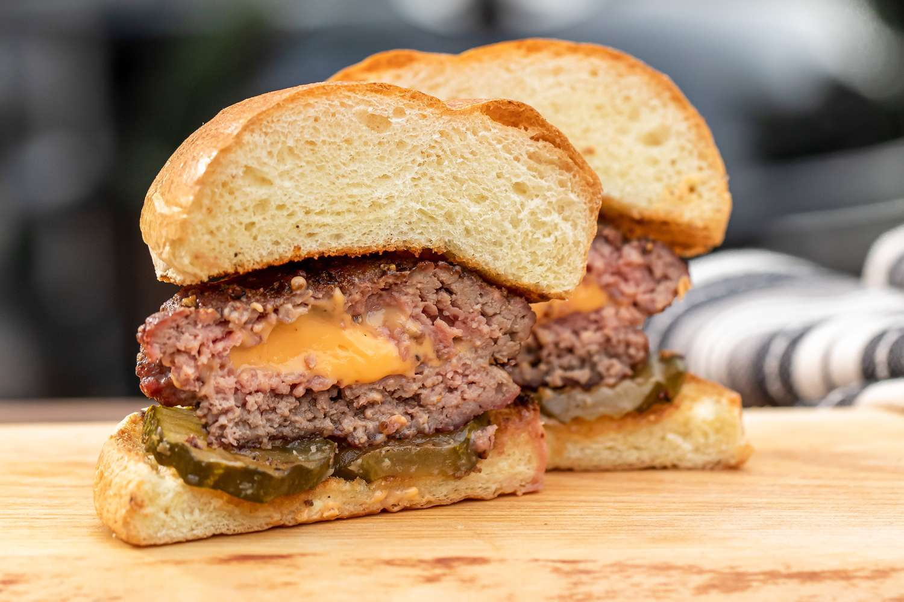

Juicy Lucy Burgers

Famous Juicy Lucy Burgers
The famous Juicy Lucy burger is a favorite of Minnesotans. It's so good! You must use American cheese on this to achieve the juiciness in the middle. I like sautéed mushrooms and onions on mine.
Ingredients
- 1 ½ pounds ground beef
- 1 tablespoon Worcestershire sauce
- 1 teaspoon black pepper
- ¾ teaspoon garlic salt
- 4 slices American cheese (such as Kraft)
- 4 hamburger buns, split
Steps
- Mix ground beef, Worcestershire sauce, pepper, and garlic salt together in a bowl until well combined. Form into eight thin patties, each slightly larger than a cheese slice.
- Stack all cheese slices and cut into four squares. Place one small cheese stack in the center of a beef patty; cover with another beef patty and tightly pinch the edges together to seal around the cheese. Be sure to seal tightly, or the cheese will burst through when cooked. Repeat with the remaining cheese and patties.
- Heat a large cast-iron skillet over medium heat. Cook patties in the hot skillet until well browned, about 4 minutes; they will puff up due to steam from the melting cheese. Flip patties, prick the tops to release steam, and cook until browned on the other side and no longer pink in the center; about 4 more minutes. An instant-read thermometer inserted into the center should read at least 160 degrees F (70 degrees C).
- Serve on hamburger buns.
Get Back to Main Page